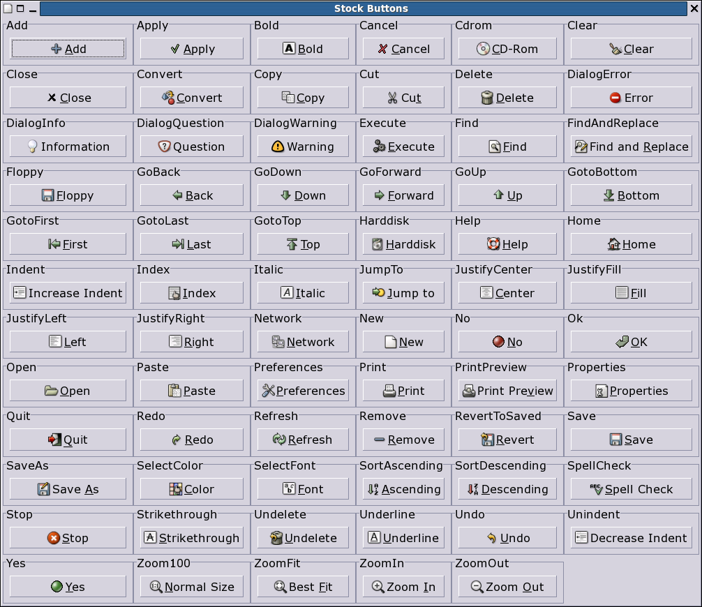
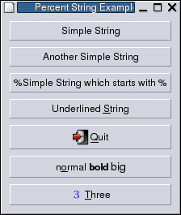

2. Concepts
2.1. Percent String
Some widget options expect a percent string as value. A percent string is a string which starts with a percent sign (%). The second character determines the type of percent string. The following types are defined:
Types of Percentstring
- !
Simple string which is not further parsed.
- %
Simple string which starts with a percent string and which is not further parsed.
- _ (underline)
The next underline is removed and the following character is underlined and used as keyboard accelerator.
- #
The following string is used as name of a stock item. Dependent on the widget the name, accelerator and/or image of the stock item is used.
Not every stock item is valid in every context. The following example shows all items which are valid as text option of the button widget.
set table [gnocl::table -borderWidth 0 -rowSpacing 0 -columnSpacing 0] set items "" set stocks [lsort [gnocl::info allStockItems]] foreach el $stocks { if { [catch {set but [gnocl::button -text "%#$el"]} ] == 0 } { lappend items [gnocl::box -label "$el" -children $but -fill 1 -expand 1] if { [llength $items] == 6 } { $table addRow $items -fill 1 set items "" } } } if { [llength $items] > 0 } { $table addRow $items -fill 1 } gnocl::window -title "Stock Buttons" -child $table
- <
The following string is parsed as markup string. Additional the next underline is removed and the following character is underlined and used as keyboard accelerator.
- /
The following string is interpreted as file name.
Example:
set box [gnocl::box -orientation vertical] $box add [gnocl::button -text "Simple String"] $box add [gnocl::button -text "%!Another Simple String"] $box add [gnocl::button -text "%%Simple String which starts with %"] $box add [gnocl::button -text "%_Underlined _String"] $box add [gnocl::button -text "%#Quit"] $box add [gnocl::button -text "%<n_ormal <b>bold</b> <big>big</big>"] $box add [gnocl::button -icon "%/./three.png" -text "%__Three"] gnocl::window -title "Percent String Example" -child $box

2.2. Markup String
A markup string contains not only the text but also its formatting, which has huge advantages for internationalization of applications.
Copyright notice: the following two tables are copies of the Pango gtk documentation.
The most general markup tag is <span>, then there are some convenience tags. <span> has the following attributes:
<span> attributes
- font_desc
A font description string, such as "Sans Italic 12"; note that any other span attributes will override this description. So if you have "Sans Italic" and also a style="normal" attribute, you will get Sans normal, not italic.
- font_family
A font family name
- face
Synonym for font_family
- size
Font size in 1000ths of a point, one of the absolute sizes 'xx-small', 'x-small', 'small', 'medium', 'large', 'x-large', 'xx-large', or one of the relative sizes 'smaller' or 'larger'.
- style
One of 'normal', 'oblique', 'italic'
- weight
One of 'ultralight', 'light', 'normal', 'bold', 'ultrabold', 'heavy', or a numeric weight
- variant
'normal' or 'smallcaps'
- stretch
One of 'ultracondensed', 'extracondensed', 'condensed', 'semicondensed', 'normal', 'semiexpanded', 'expanded', 'extraexpanded', 'ultraexpanded'
- foreground
An RGB color specification such as '#00FF00' or a color name such as 'red'
- background
An RGB color specification such as '#00FF00' or a color name such as 'red'
- underline
One of 'single', 'double', 'low', 'none'
- rise
Vertical displacement, in 10000ths of an em. Can be negative for subscript, positive for superscript.
- strikethrough
'true' or 'false' whether to strike through the text
- lang
A language code, indicating the text language
The following convenience tags are provided:
Convenience tags
- b
Bold
- big
Makes font relatively larger, equivalent to <span size="larger">
- i
Italic
- s
Strikethrough
- sub
Subscript
- sup
Superscript
- small
Makes font relatively smaller, equivalent to <span size="smaller">
- tt
Monospace font
- u
Underline
2.3. Colors
Some widget options expect a color as value. A color can be given in several different formats.
Color formats
- Color Name
A color name from rgb.txt like red, LightPink, or DarkKhaki
- RGB values as integer
A list of the red, green and blue components. Each value must be an integer between 0 and 65535. It may be convenient to use the hexadecimal format, in which the maximum is 0xFFFF.
- RGB values as float
A list of the red, green and blue components. Each value must be an float between 0 and 1.

The values are tested first for an integer format. Only if a value does not have an integer format, the float format is tested. That means, that "1" is an integer with a value corresponding to "0.000015", whereas "1." is interpreted as a floating point number with a value corresponding to integer 65535
Some widget options expect a color with transparency (also called alpha blending) as value. An alpha value of 0 means that the color is completely transparent, 1.0 in float or 65535 as integer means it covers its background completely. The same formats than above are excepted, in which case the color has no transparency, plus the following ones.
Color formats with transparency
- Color Name plus transparency
A list of a color name from rgb.txt and a transparency value between 0 and 65535 as integer or 0 and 1.0 as float like "red 32768", "LightPink 0x1000", or "DarkKhaki 0.9".
- RGBA values as integer
A list of the red, green, blue and alpha components. Each value must be an integer between 0 and 65535, for example "3000 10000 20000 15000". It may be convenient to use the hexadecimal format, in which the maximum is 0xFFFF.
- RGBA values as float
A list of the red, green, blue and alpha components. Each value must be an integer between 0 and 1.0, for example "0.1 0.3 0.3 0.5".
The values are tested first for an integer format. Only if a value does not have an integer format, the float format is tested. That means, that "1" is an integer with a value corresponding to "0.000015", whereas "1." is interpreted as a floating point number with a value corresponding to integer 65535
- Empty string
The empty string means full transparency.